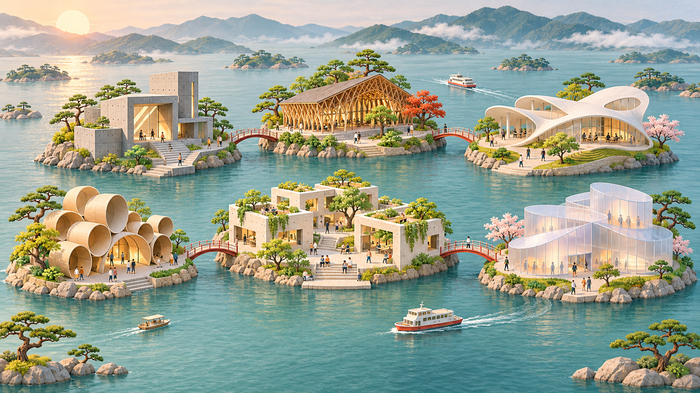

ARCHITECTURE ARCHIPELAGO
2006—2026・六座島・十八個故事

WELCOME ABOARD / 01
混凝土如何收藏光？木材如何長成城市？建築又能不能成為災後的庇護？選一座島，跟著建築師的生命路線登岸。
CREDITS & SOURCES
人物與建築照片來自 Wikimedia Commons，依各檔案頁面所列 CC 授權使用；圖像可能經等比例裁切。完整作者、授權與來源整理在專案的 data/credits.json。
data/credits.json
主視覺為本專案原創生成插畫，僅用於導覽情境；不代表任何實際建築。